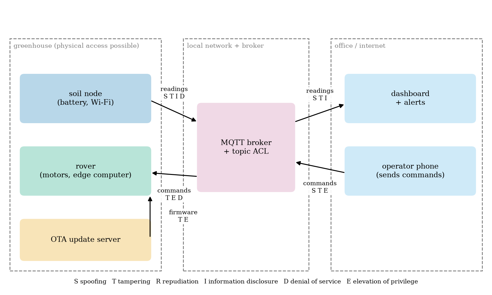
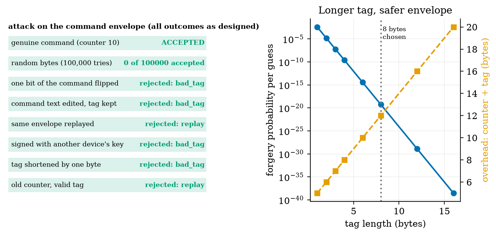
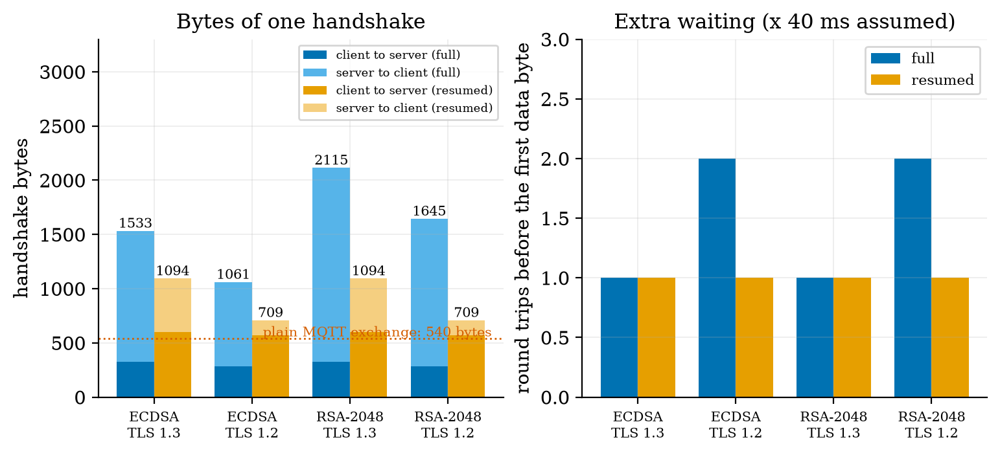
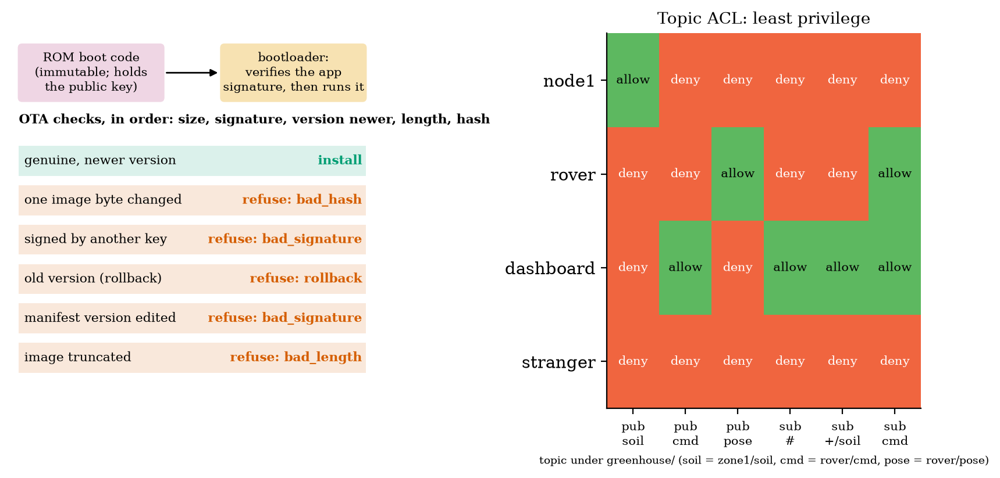
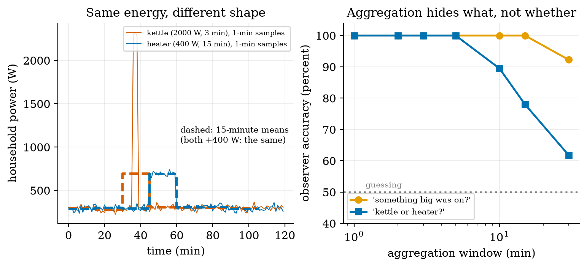

Unit 7 ready
IoT Security and Privacy: Threats, Keys, Signatures, Least Privilege
STRIDE, the Mirai botnet, authenticated commands, TLS cost, signed updates, ACLs and privacy.
Session map
After this session you can:
- draw a threat model of the greenhouse (assets, flows, trust boundaries) and list its threats with STRIDE;
- explain how the Mirai botnet grew from default passwords, and compute how long a password of a given entropy resists a given guessing rate;
- build an authenticated command (per-device key, counter, truncated HMAC tag), say what each field defeats, and show by experiment that forged, tampered and replayed commands are refused;
- measure what TLS costs a node that reconnects at every wake-up, and choose between TLS and a message-level MAC;
- verify a signed over-the-air update (signature, version, length, hash), restrict an MQTT client to its own topics with an ACL, and say what aggregation does and does not hide about a household.
- Prerequisites: Unit 5 (MQTT, our broker and client), Unit 6 (aggregation), Unit 4 (deep sleep). Probability and powers of two. No cryptography background: each primitive is defined where it is used.
- Difficulty ladder used: easy → medium → medium-hard → hard (Sections 3.1 to 3.4); the hardest tier is posed as open questions in Section 3.5.
- Deliverables: this document (.tex, .pdf, .docx), 6 figures, the module
codes/security/iot_sec/(iot_sec.py: password arithmetic, per-device keys, HMAC commands with replay protection, Ed25519 OTA manifests, topic ACLs;tls_cost.py: an in-memory TLS handshake meter; 6 tests plus the extended broker tests),analysis_log.txtandprivacy_log.txt(the measured numbers), and authentication and ACL hooks added to the Unit 5 broker. - Source anchors: Antonakakis et al., Understanding the Mirai Botnet, USENIX Security 2017, full text read on 2026-10-11: the initial attack on Krebs on Security exceeded 600 Gbps (Introduction, PDF p. 2); the scanner probed Telnet TCP ports 23 and 2323 and tried 10 username/password pairs chosen randomly from a list of 62 credentials (Section 2, PDF p. 3); the earlier BASHLITE used 6 usernames and 14 passwords against Mirai’s 62 pairs (PDF p. 4); infections were 200,000 to 300,000 in September 2016, peaked at 600,000 at the end of November 2016 and fell to about 100,000 by late February 2017 (Section 4.2, PDF p. 7). All other facts are derived in the text or measured by the module (HMAC experiments, Ed25519 sizes, TLS handshake bytes with OpenSSL 3.4.0 and
cryptography42.0.5). The Zipf popularity of default credentials, appliance powers, threat scores and all attacker guessing rates are assumed; the TLS numbers are for a single small self-signed certificate (real chains are larger) and say nothing of the time a microcontroller needs for the cryptography.
1. Terms: the term tree
| Term | Symbol | One-line meaning | Where it appears | New / known |
|---|---|---|---|---|
| asset, threat, vulnerability | what is worth protecting; what could go wrong; the weakness that allows it | 2 | new | |
| attack surface | every place an attacker can touch the system (ports, radios, update path, physical access) | 3.1 | new | |
| risk | likelihood of a threat times its impact | 3.2 | new | |
| confidentiality, integrity, availability | CIA | keep data secret; keep it unaltered; keep the service usable | 2 | new |
| STRIDE | six threat classes: spoofing, tampering, repudiation, information disclosure, denial of service, elevation of privilege | 3.2 | new | |
| authentication and authorisation | proving who you are; deciding what you may do | 2 | new | |
| entropy (of a secret) | H | bits of uncertainty: \log_2 of the number of equally likely choices | 3.3 | new |
| dictionary attack | trying a list of likely secrets instead of all of them | 3.3 | new | |
| botnet | many compromised devices controlled by one attacker | 3.3 | new | |
| hash function | a function that maps data of any length to a fixed-length fingerprint (SHA-256: 32 bytes) | 3.3 | new | |
| MAC and HMAC | a short tag computed from a secret key and a message; only key holders can compute or check it | 3.3 | new | |
| replay attack and counter | re-sending a genuine old message; a number that must increase with every message | 3.3 | new | |
| key derivation (per-device key) | computing each device’s key from a master key and its identity | 3.3 | new | |
| TLS and certificate | an encrypted, authenticated channel; a signed statement binding a name to a public key | 3.4 | new | |
| session resumption | reusing the secrets of an earlier TLS session to shorten the next handshake | 3.4 | new | |
| digital signature (Ed25519) | a value that anyone with the public key can verify but only the private-key holder can create | 3.4 | new | |
| secure boot and OTA update | running only signed code; updating firmware over the air | 3.4 | new | |
| rollback attack | forcing a device back to an older, vulnerable version | 3.4 | new | |
| ACL and least privilege | a list of what each client may publish and subscribe; granting only what is needed | 3.4 | new | |
| network segmentation | splitting a network so that one breach does not reach everything | 3.4 | new | |
| privacy and data minimisation | protecting information about people; collecting and keeping no more than needed | 3.4 | new |
Terms used but not taught here: public-key cryptography beyond signatures (named only), certificate authorities and revocation (named only), differential privacy (named only), hardware security elements (named only), legal frameworks such as data-protection law (named only).
2. Remember
An asset is what is worth protecting (the rover’s motors, the readings, the watering schedule, the firmware, the residents’ privacy). A threat is something that could go wrong; a vulnerability is the weakness that lets it. Security aims at three properties, the CIA triad: confidentiality (only the right parties can read it), integrity (it cannot be altered unnoticed) and availability (it works when needed). Two actions underlie them: authentication (proving who you are) and authorisation (deciding what you may do).
An IoT device is often cheap, built once, installed for years, rarely updated, reachable from the internet, unobserved, physically accessible, and short of power and memory for cryptography. Each of these makes an attack easier or a defence harder. The Mirai botnet (Section 3.3.1) is what that looks like at scale.
Memory hooks.
- Never trust, always verify: a message is believed because of a key, not because of where it came from.
- A secret that is the same on a million devices is not a secret.
- A tag proves who and what; a counter proves when; a signature proves who to everyone.
- Give each part exactly the access it needs and nothing more.
- Aggregation hides what, not whether.
Before you read on: three predictions (answers in Section 10).
- Mirai tried a list of default Telnet logins. About how many username/password pairs did its dictionary hold: 6, 62 or 6000?
- An 8-byte (64-bit) message tag is attached to a command. If an attacker could try 100 forged commands per second, about how long to expect before one is accepted: a day, a year or billions of years?
- A node reconnects with TLS at every wake-up. By about how much does one TLS 1.3 handshake increase the bytes of the 540-byte plain MQTT exchange of Unit 5: 10%, a factor of 2 to 4, or a factor of 100?
Recall quiz (answers in Section 10).
- Name the three properties of the CIA triad.
- What does a counter in a command protect against that a MAC alone does not?
- Why can an HMAC key not be used to sign firmware for many devices?
- What does an ACL deny to a compromised soil node?
- What does aggregating readings protect, and what does it not protect?
3. Understand: the derivation
3.1 Tier 1 (easy): intuition and a picture
Who could do what to the greenhouse? A neighbour on the Wi-Fi could read the readings. A stranger who finds the node’s default password could take it over. Someone could send the rover a forged “go to plant 7” command, or an old genuine one again. A fake update could replace the firmware. The attacker could simply flood the broker so that nothing arrives. Each of these is a place where the system can be touched, its attack surface: the Wi-Fi, the broker’s port, the update path, the nodes themselves.
A threat model draws this explicitly. Figure 1 is a data-flow diagram of our system: the parts (soil node, rover, broker, dashboard, operator phone, update server), the flows between them (readings, commands, firmware) and the trust boundaries (dashed): the greenhouse where an intruder could touch a device, the local network and broker, and the office and internet. Each arrow carries the STRIDE letters of the threats that apply to it (Section 3.2). Threats cluster at the boundaries, because data crossing a boundary can be forged, read or blocked by whoever is on the other side.

3.2 Tier 2 (medium): the definitions made precise
3.2.1 STRIDE
STRIDE is a mnemonic for six classes of threat, each the violation of a property:
| threat | the attacker… | property violated | typical defence |
|---|---|---|---|
| Spoofing | pretends to be someone else (a node, the operator) | authentication | per-device keys, passwords, certificates |
| Tampering | changes data in flight or at rest (a reading, a command, firmware) | integrity | MAC, signature, TLS |
| Repudiation | later denies having done something, or no record exists | accountability | logs, signed commands |
| Information disclosure | reads what they should not (readings, credentials) | confidentiality | encryption, ACL, aggregation |
| Denial of service | makes the system unavailable (flooding, jamming, draining a battery) | availability | rate limits, redundancy, local fallback |
| Elevation of privilege | gains more rights than granted (a node commanding the rover) | authorisation | least privilege, ACL, separation |
3.2.2 Risk
Risk is estimated as likelihood times impact. A common practice scores each from 1 to 5 and ranks by the product. For the greenhouse (judgements, not measurements): default credentials on the nodes, likelihood 4 and impact 3, score 12; a forged rover command, likelihood 3, impact 5, score 15 (a moving machine can hurt); an unsigned firmware update, likelihood 2, impact 5, score 10; eavesdropping on soil readings, likelihood 4, impact 1, score 4; flooding the broker, likelihood 3, impact 3, score 9; a stolen node, likelihood 2, impact 2, score 4. The ranking says what to fix first: authenticate rover commands, then remove default credentials, then sign updates. Encrypting soil readings comes last, because the readings are not sensitive.
3.3 Tier 3 (medium-hard): the main derivations
3.3.1 Passwords, entropy and the Mirai botnet
The entropy of a secret chosen uniformly from N possibilities is H=\log_2N bits; a password of \ell symbols from an alphabet of a symbols has H=\ell\log_2a. An attacker who tries guesses at random finds it, on average, after half of the possibilities: \text{expected guesses}=2^{H-1},\qquad \text{expected time}=\frac{2^{H-1}}{r}\ \ (r\ \text{guesses per second}). \tag{1}
| secret | entropy (bits) | expected guesses | time at 10^3/s | at 10^6/s | at 10^9/s |
|---|---|---|---|---|---|
| one of Mirai’s 62 pairs | 5.95 | 31 | 0.03 s | 31 \mus | 31 ns |
| 4-digit PIN | 13.29 | 5,000 | 5 s | 5 ms | 5 \mus |
| 8 lowercase letters | 37.60 | 1.0\times10^{11} | 3.3 years | 29 hours | 104 s |
| 8 mixed letters and digits | 47.63 | 1.1\times10^{14} | 3,500 years | 3.5 years | 30 hours |
| 12 random letters and digits | 71.45 | 1.6\times10^{21} | 5\times10^{10} years | 5\times10^{7} years | 51,000 years |
Mirai, the botnet of late 2016, needed none of this. The paper’s analysis of the released source shows how it grew. It scanned the internet with stateless TCP SYN probes to pseudorandom IPv4 addresses on Telnet ports 23 and 2323; at a host that answered, it tried 10 username and password pairs chosen randomly from a list of 62 credentials (Section 2 of the paper); at the first success it reported the victim and its credentials, and a separate loader installed the malware. Its predecessor BASHLITE had used 6 usernames and 14 passwords; Mirai’s 62 pairs “largely subsumed” them and added credentials of routers and IoT devices. Infections held at 200,000 to 300,000 in September 2016, peaked at 600,000 at the end of November 2016 and fell to about 100,000 by late February 2017; the first attack on Krebs on Security exceeded 600 Gbps. The devices were among “the Internet’s least powerful hosts”: cameras, routers, recorders, whose owners never changed a factory password.
How much of the vulnerable population does a short dictionary cover? Suppose the factory credentials of devices are not equally likely but follow a Zipf law (the r-th most common credential has probability proportional to 1/r) over 200 possible defaults (an assumed popularity model). The dictionary of the D most popular credentials covers a fraction \sum_{r\le D}1/r\big/\sum_{r\le200}1/r: 17% of the vulnerable devices for D=1, 39% for 5, 50% for 10, 61% for 20, 80% for D=62, 88% for 100 and all for 200 (Figure 2, right). A scan that tries 10 of the 62 pairs per login succeeds on a device with a dictionary credential with probability 10/62=16\% per visit, i.e. after about 6 visits on average. A tiny list, tried patiently, breaks most of a population that has defaults at all. Against a device with a unique random password of 12 characters (71 bits) the same list covers 0% and brute force costs tens of thousands of years even at 10^9 guesses per second.

The lesson is a design rule, not a number: no shared default secrets. Every device gets its own random credential or key at manufacture or first use, and cannot be used until it is set.
3.3.2 Hashes and HMAC
A hash function such as SHA-256 maps any input to a 32-byte fingerprint; it is easy to compute, but infeasible to invert or to find two inputs with the same output. A hash alone does not authenticate: an attacker can hash a forged message. A message authentication code (MAC) mixes in a secret key. HMAC builds one from a hash: \mathrm{HMAC}(K,m)=H\big((K\oplus\text{opad})\,\|\,H((K\oplus\text{ipad})\,\|\,m)\big) with two fixed padding constants (we use Python’s standard implementation, hmac with SHA-256). Only a holder of the key K can compute the tag of a message, and the receiver can check it. A tag may be truncated to its first t bytes to save space.
3.3.3 An authenticated command
The envelope of the module’s sign_command is: a 4-byte counter, the command bytes, and a truncated HMAC-SHA256 tag over the counter and the command (default t=8 bytes). With a command goto plant7 (11 bytes), the envelope is 23 bytes: 12 bytes of overhead. Each field has a job:
- The tag defeats tampering and spoofing: changing a bit of the counter or command, or forging a message without the key, makes the tag fail. A forger who guesses a t-byte tag succeeds with probability 2^{-8t} per attempt. For t=8 this is 5.4\times10^{-20}, an expected 1.8\times10^{19} attempts: at 100 per second, 5.8\times10^{9} years. Prediction 2 of Section 2: billions of years (for comparison, the universe is about 1.4\times10^{10} years old: no attacker will get there). With a 4-byte tag the expected attempts are 4.3\times10^{9}: 1.4 years at 100 per second, which is not safe against an attacker who can send faster or who has time; with 2 bytes, 7.6 minutes (6.6\times10^4 attempts). Rate-limiting by the receiver multiplies these times, but a long tag does not need it.
- The counter defeats replay: a genuine old envelope has a valid tag but a counter that is not greater than the last accepted one. The receiver keeps the last counter and accepts only a larger one.
- The per-device key limits the damage of one compromise: the key of device i is K_i=\mathrm{HMAC}(K_{\text{master}},\text{"device-key|"}\,\|\,\text{id}_i), so a stolen K_i reveals neither the master key nor any other K_j, and a command signed for the rover is refused by a node with a different key (it was run: wrong key gives “bad tag”).
We ran the attacks (Figure 3, left; the script prints each outcome). 100,000 random byte strings of envelope length were all refused (expected number accepted: 100{,}000\times2^{-64}=5\times10^{-15}). All 184 single-bit flips of the 23-byte envelope were refused. The genuine envelope with counter 10 is accepted when the last counter is 9; the same envelope sent again is refused as a replay; an envelope for another device, one with the command text edited but the tag kept, one with a tag one byte short, and one with a valid tag but an old counter (5) were refused, the last as a replay. The comparison of tags uses a constant-time function (hmac.compare_digest), so the time taken does not reveal how many leading bytes were right.

What the scheme does not give. It does not encrypt: the command is readable. It protects only if the counter is persistent: a sender that forgets its counter after a restart is refused until it catches up, and a receiver that forgets its last counter would accept replays; counters live in non-volatile memory (Unit 4: memory that survives deep sleep). And a shared key means that anyone holding the rover’s key can also forge commands to the rover, which is why a signature (Section 3.4.2) is used when the verifier must not be able to sign.
3.4 Tier 4 (hard): TLS, signed updates, least privilege, privacy
3.4.1 TLS: what it buys and what it costs
TLS (Transport Layer Security) wraps a TCP connection in an encrypted, authenticated channel: the server proves its identity with a certificate (a signed statement binding a name to a public key), client and server agree on session keys, and everything after the handshake is encrypted and integrity-protected. It gives confidentiality, integrity and server authentication for a whole connection; it is the standard for HTTP and MQTT over the internet. For a sleeping node it has a price, which we measured with OpenSSL 3.4.0 running both ends in memory (tls_cost.py: a client and a server exchanging the handshake bytes through ssl.MemoryBIO, counting every byte; a self-signed certificate for localhost; one 31-byte application record each way).
| certificate and TLS version | certificate (bytes) | full handshake client-to-server + server-to-client (bytes) | round trips before first data | resumed handshake (bytes) |
|---|---|---|---|---|
| ECDSA P-256, TLS 1.3 | 325 | 327 + 1,206 = 1,533 | 1 | 598 + 496 = 1,094 |
| ECDSA P-256, TLS 1.2 | 325 | 282 + 781 = 1,063 | 2 | 568 + 141 = 709 |
| RSA-2048, TLS 1.3 | 722 | 327 + 1,788 = 2,115 | 1 | 598 + 496 = 1,094 |
| RSA-2048, TLS 1.2 | 722 | 282 + 1,363 = 1,645 | 2 | 568 + 141 = 709 |
Reading the table: (i) a full handshake with the smallest certificate is 1.1 to 1.5 kB; with RSA 1.6 to 2.1 kB; real deployments send a chain of two or three certificates, so these are lower bounds. (ii) TLS 1.3 needs one round trip before the first data byte, TLS 1.2 two (at an assumed 40 ms round trip, 40 ms against 80 ms of extra waiting with the radio on). (iii) Resumption removes the certificate but not the cost: 709 to 1,094 bytes. (iv) For our node the plain MQTT exchange of Unit 5 costs 540 bytes; adding a TLS 1.3 ECDSA handshake makes it 540+1{,}533=2{,}073 bytes, 3.8 times as many, and a factor of 100 is far off. Prediction 3 of Section 2: a factor of 2 to 4. The time for the microcontroller to do the public-key mathematics is not measured here and is typically larger than the round trips (assumed to be hundreds of milliseconds at the radio’s current: Unit 4’s awake-time budget).
The alternative for a sleeping node on a trusted local link: authenticate each message with the HMAC envelope of Section 3.3.3 (12 bytes, no handshake, no public-key work, no extra round trip) and rely on the Wi-Fi link’s own encryption for confidentiality, then let a gateway that stays awake hold the TLS connection to the cloud (Unit 5, Unit 6). This gives integrity, authentication and replay protection; it does not give confidentiality of the readings on the air beyond what the Wi-Fi provides, which for soil moisture is acceptable.

3.4.2 Secure boot and signed over-the-air updates
An OTA (over-the-air) update replaces a device’s firmware remotely: indispensable, because bugs will be found, and dangerous, because whoever can push firmware owns the device. The defence is signing. A digital signature is created with a private key kept secret by the maker and checked with the public key stored in the device; anyone with the public key can verify but cannot sign. (An HMAC cannot do this: any device that can verify an HMAC holds the same key and could forge updates for all the others.) We use Ed25519, whose public keys are 32 bytes and signatures 64 bytes (measured). The manifest of our module (make_manifest) is 104 bytes: a 4-byte version, a 4-byte image length, the 32-byte SHA-256 hash of the image, and the 64-byte signature over those 40 bytes. Signing the hash means that the signature is the same size for a 50 kB or a 2 MB image. The device checks, in this order: manifest size; signature; version strictly newer than the installed one; image length; image hash. The outcomes of six real cases (Figure 5, left): the genuine update is accepted; an image with one byte changed is refused (hash); a manifest signed by another key is refused (signature); an old signed version offered again is refused (rollback: without this check an attacker could reinstall a version with a known hole); a manifest whose version was edited is refused (the signature covers the version); an image shortened by 100 bytes is refused (length).
Secure boot applies the same idea at every start: immutable boot code (in ROM) holds the public key and refuses to run a bootloader or application whose signature does not verify; the bootloader checks the application the same way. Updates are written to a second slot (A/B), verified again by the bootloader, and the device falls back to the old slot if the new one fails to start. These are design facts about the check chain; the hardware parts (ROM, fuses, flash encryption) are not simulated here.
3.4.3 Least privilege: an ACL on the broker
Authentication says who a client is; authorisation says what it may do. An access-control list (ACL) for MQTT lists, for each client, the topic filters it may publish to and subscribe to; everything else is denied (least privilege). We added two optional hooks to the Unit 5 broker: auth(client_id, username, password) (a refused CONNECT gets CONNACK code 5) and acl(client_id, action, topic) (a refused PUBLISH is acknowledged and dropped; a refused SUBSCRIBE gets 0x80 in the SUBACK). Subscription filters are checked by coverage: a requested filter is allowed only if every topic it matches is matched by an allowed filter (greenhouse/+/soil is covered by greenhouse/#, but greenhouse/# is not covered by greenhouse/zone1/#). The greenhouse’s rules (Figure 5, right): a soil node may publish greenhouse/+/soil and greenhouse/+/temp only; the rover may publish its pose and subscribe to its command topic; the dashboard may subscribe to everything and publish rover commands; an unknown client may do nothing. In an end-to-end test through the broker, a node with a wrong password was refused; a correct node was granted its own publication (greenhouse/zone1/soil reached the dashboard); the same node’s attempt to subscribe to greenhouse/# was refused (SUBACK 0x80) and its attempt to publish a forged command to greenhouse/rover/cmd was dropped and logged (("node1","pub","greenhouse/rover/cmd") in the broker’s denial log): a compromised soil node cannot command the rover. ACLs complement the HMAC of Section 3.3.3: the ACL confines what an authenticated client can do; the HMAC protects the command even if the broker itself is breached.

Network segmentation adds a second wall: put the nodes, the rover and the broker on their own network segment (a separate Wi-Fi network or VLAN) that cannot reach the office network, so that a breached camera in the office cannot reach the rover, and a breached node cannot scan the office. It costs a router rule, not code.
3.4.4 Privacy: what aggregation hides
Security protects data from attackers; privacy is about what the authorised party learns about people. A household’s electricity use reveals when people are home, what they cook and when they sleep. The principle of data minimisation says to collect and keep only what the purpose needs, at the coarsest resolution that serves it. Aggregation (Unit 6) is the engineering tool, but it hides less than one hopes. We simulated a household with a base load of 300 W (noise 30 W) and two appliance events with the same energy: a kettle (2000 W for 3 minutes, 100 Wh) and a space heater (400 W for 15 minutes, 100 Wh) (Figure 6, left; the powers are assumed). An observer sees only means over a window w, takes the largest window mean of a two-hour record and decides by the nearer class mean whether it was the kettle or the heater; separately, decides whether anything happened. Over 400 trials per window:
| window | 1 min | 2 min | 3 min | 5 min | 10 min | 15 min | 30 min |
|---|---|---|---|---|---|---|---|
| tells kettle from heater | 100% | 100% | 100% | 100% | 89.5% | 78.0% | 61.8% |
| detects that something happened | 100% | 100% | 100% | 100% | 100% | 100% | 92.2% |

3.5 Tier 5 (hardest): open questions
- Where does the first key come from? Per-device keys need provisioning: at the factory, by a first-use pairing, or by a hardware secure element. Each has a trust problem (the factory, the first connection, the chip). Design a pairing for 50 soil nodes that a non-expert can run, and say what an attacker present during pairing could do.
- Time and counters. A device without a clock cannot use timestamps; one with a counter must store it. Compare counters, timestamps and challenge-response against replay, with the cost of each in energy and state.
- Updates for devices that cannot be updated. A device with no OTA path is a permanent vulnerability. What should makers owe (support periods, signed updates) and what can an owner do (isolate, replace)?
4. Apply
4.1 Worked problems
Problem 1 (entropy). A password of 10 random lowercase letters: entropy, expected guesses, and time at 10^8 guesses per second.
Solution. H=10\log_226=47.0 bits; expected guesses 2^{46.0}=7.0\times10^{13}; time 7.0\times10^{5} s =8.1 days.
Problem 2 (tag length). A command envelope has a 3-byte tag. How many forged attempts, on average, until one is accepted, and how long at 1000 attempts per second?
Solution. 2^{24}=1.7\times10^{7} attempts; 1.7\times10^4 s =4.7 hours. Too short: use at least 8 bytes or rate-limit.
Problem 3 (replay). The receiver’s last accepted counter is 41. Which of these envelopes (counter, valid tag) does it accept: 40, 41, 42, 1000?
Solution. 42 and 1000 (strictly greater). 40 and 41 are replays. Note that accepting 1000 moves the receiver’s counter to 1000, so a sender at 43 is then refused: counters must not jump without reason (a window limit helps).
Problem 4 (ACL coverage). Is greenhouse/+/temp covered by the allowed filter greenhouse/zone1/#? And greenhouse/zone1/temp?
Solution. No: + matches other zones that the allowed filter does not cover. Yes: the topic is under greenhouse/zone1/.
Problem 5 (TLS cost). A node sends 1 reading a minute over a fresh MQTT QoS 1 connection with TLS 1.3 and ECDSA: bytes per day and the factor against plain MQTT.
Solution. 2{,}073\times1440=2.99 MB per day against 0.78 MB plain: 3.8 times. Reducing it needs a gateway to hold the connection, or a UDP-based design, or the HMAC envelope on the local link.
4.2 Code and figures
import iot_sec as S
master = b"keep-this-secret-offline"
key = S.derive_key(master, "rover1") # per-device key
env = S.sign_command(key, counter=10, cmd=b"goto plant7") # 4 + 11 + 8 = 23 bytes
print(S.verify_command(key, env, last_counter=9)) # (True, 'ok', b'goto plant7', 10)
print(S.verify_command(key, env, last_counter=10)) # (False, 'replay', None, 10)
sk, pk = S.make_keypair() # Ed25519 (needs the cryptography package)
man = S.make_manifest(7, firmware_bytes, sk) # 104 bytes
print(S.verify_ota(man, firmware_bytes, pk, current_version=6)) # (True, 'ok')
acl = S.Acl([(r"node\d+", "pub", "greenhouse/+/soil"), ("dashboard", "sub", "greenhouse/#")])
# Broker(auth=lambda cid, user, pw: ..., acl=acl) (Unit 5 broker with the new hooks)The module and README are in codes/security/iot_sec/. Its six tests check: the password arithmetic; the HMAC envelope against good, forged, tampered, replayed, short and other-device inputs, including every single-bit flip; the OTA checks against six attacks (skipped without cryptography); ACL coverage and the greenhouse rules; the broker hooks end to end (refused password, refused subscription, dropped forged command, denial log); and the TLS meter (resumption is smaller; TLS 1.3 needs 1 round trip and TLS 1.2 needs 2). The ten tests of the Unit 5 module still pass after the hooks were added.
What would look different if the theory were wrong? If the envelope did not bind the counter to the tag, a replay with an old counter would be accepted; both the replay and the old-counter case are refused. If the ACL coverage rule were wrong, the dashboard’s greenhouse/# would be refused or the node’s greenhouse/# would be allowed; neither happens. If the TLS meter were wrong, it would not reproduce the known 1-round-trip difference between TLS 1.3 and 1.2; it does.
5. Analyze
Limits. Entropy adds linearly in bits and the search cost multiplies: each extra bit doubles it. As the tag grows the forgery probability halves per bit, so beyond about 64 bits further length buys nothing against online guessing. As the aggregation window grows the observer’s accuracy tends to chance, but never exactly (92% at 30 minutes for “whether”).
Dominance. For a Mirai-type attack, the dominating fact is that credentials are shared: the strength of the password is irrelevant when everyone has the same one. For a sleeping node, the TLS cost is dominated by the certificate and the handshake, not by the application data (31 bytes in 1,533 + 540).
Order-of-magnitude estimate. A 62-credential dictionary against a device with a default needs at most 62 tries; against a unique 12-character password about 10^{21}: the gap is 19 orders of magnitude, which is what “per-device secrets” buys.
Failure modes. (1) Shared default credentials (Mirai). (2) Replay of a genuine command (no counter). (3) A counter that resets (replay window). (4) An unsigned update path (the whole fleet taken over). (5) No rollback protection (old holes reopened). (6) An over-privileged client (a node commanding the rover). (7) A key shared across all devices (one theft breaks every device). (8) Aggregation mistaken for anonymity.
6. Evaluate
HMAC versus TLS versus DTLS. HMAC per message (12 bytes, no handshake) authenticates and orders messages but does not encrypt, protects only against parties without the key, and needs key distribution and persistent counters. TLS protects a whole connection (confidentiality, integrity, server authentication) at 1.1 to 2.1 kB and 1 or 2 round trips per fresh connection. DTLS is TLS for datagram transports such as CoAP (named, not measured). A sensible split for the greenhouse: HMAC on the node link, TLS from the gateway to the cloud.
Symmetric versus asymmetric. A shared key (HMAC) is small and fast but any verifier can also forge; a signature (Ed25519) lets a device verify what it cannot create, which is what a firmware update needs, at 64 bytes per signature and public-key mathematics on the device.
Privacy by design. Collecting less beats protecting more. Edge aggregation (Unit 6) is a privacy tool as well as a bandwidth tool, provided one knows what it does not hide (Section 3.4.4).
Context. Mirai is the textbook case for per-device secrets, patching and egress control: it succeeded against a dictionary of 62 pairs, not against clever cryptography. When NOT to use these methods: do not invent your own cryptography (use standard algorithms and well-tested libraries; our HMAC and Ed25519 come from Python’s hmac and the cryptography package, and the course’s code teaches the protocol around them, not the primitives); do not treat a classroom broker as hardened (ours has no TLS, rate limiting or persistent sessions); do not rely on obscurity.
Honesty about this Unit’s numbers. The Mirai facts were read in the paper. The guessing rates, the Zipf popularity, the appliance powers and the risk scores are assumptions or judgments. The HMAC, OTA and ACL experiments are real executions of the module’s code; the TLS bytes are real but for one small self-signed certificate; the cryptographic computation time on a microcontroller, certificate chains, revocation and hardware secure elements are not covered. The security of the course’s own code was not audited.
7. Create
- Add a replay window. Let the receiver accept counters up to 16 ahead and keep a bitmap of recently seen ones, so a lost command does not block the next; test with reordered envelopes.
- Rate-limit the broker. Count failed CONNECTs per client and delay or refuse after 5 in a minute; show how it multiplies the time to guess a short tag.
- Provision keys. Write a first-use pairing for a new soil node (a short code typed on the dashboard), derive its key from the master with
derive_key, and list what an eavesdropper at pairing time would learn. - Could become a package module:
iotrobotics.securitywith the envelope, OTA manifest, ACL and the TLS meter, reused by the capstone (Unit 12).
Running project, Layer 6: the hardened node and rover. The soil node sends its reading as before, with a per-device key and an HMAC-protected, counter-numbered envelope on the local link; the gateway holds the TLS connection to the cloud. The rover accepts only commands whose envelope verifies (per-device key, 8-byte tag, strictly increasing counter), and refuses firmware whose manifest does not verify (signature, newer version, length, hash). The broker authenticates every client and applies a least-privilege ACL; the nodes and rover live on their own network segment. Updated requirements:
| id | requirement | status after Unit 7 |
|---|---|---|
| R7 | only authorised commands move the rover | met by HMAC-authenticated, counter-numbered commands (23 bytes for an 11-byte command) plus the ACL; 0 of 100,000 random forgeries accepted, replays refused |
| S1 | the rover stops when the link is lost for more than 5 s | unchanged (Unit 11); a replayed “go” command is now refused, so a recorded command cannot restart it |
| R22 (new) | every firmware update is signed and cannot be rolled back | Ed25519 manifest of 104 bytes; six attack cases refused |
| R23 (new) | no shared default credentials | per-device keys derived from a master; broker authentication refuses a wrong password |
| R24 (new) | a compromised node cannot command the rover | ACL: node publishes only greenhouse/+/soil and +/temp; tested through the broker |
| R25 (new) | the extra cost of security on a sleeping node stays under 100 bytes and no extra round trip | HMAC envelope: 12 bytes, 0 round trips; TLS on the node would add 1,533 bytes and 1 round trip, so TLS is placed at the gateway |
| R26 (new) | the cloud receives no raw per-minute household-style data | 10-minute edge aggregates (Unit 6); but windows below 30 minutes do not hide which events occurred (Section 3.4.4) |
8. Visualization lesson
| Chart type | Best for | How it misleads | matplotlib call |
|---|---|---|---|
| data-flow diagram with trust boundaries | where threats arise (flows crossing boundaries) | a diagram shows paths, not likelihoods; add the risk table | Rectangle(ls="--"), FancyArrowPatch |
| bars of entropy with annotated times | comparing secrets on a log-like quantity | bits are logarithmic: a bar twice as tall is not twice as hard | ax.bar(x, bits), ax.text(...) |
| coverage curve (CDF of a dictionary) | how much of a population a list reaches | the curve depends on an assumed popularity model; say so | ax.plot(D, coverage) |
| log-scale dual-axis (probability and overhead against tag length) | an exponential gain against a linear cost | a dual axis invites false crossing points; the log axis hides how small the probability is | ax.semilogy(...), ax.twinx() |
| stacked bars of direction (client to server, server to client) | the composition of a cost | totals are easy, the split is not; label the totals | ax.bar(x, a), ax.bar(x, b, bottom=a) |
| accuracy against a parameter, with the chance line | how an observer’s success falls | accuracy near 50% is not “safe” in the way that 100% is “unsafe”: it depends on the stakes | ax.plot(w, acc), ax.axhline(50) |
Reading Figure 5 (right) as a chart. The matrix is the ACL: a row is a client’s whole authority. Reading across a row tells what a compromise of that client costs; the stranger row is all red by design.
9. Problem set
- (easy) How many bits of entropy does a 6-digit numeric code have, and how long to search it at 100 guesses per second?
- (medium) The rover’s envelope uses a 6-byte tag. Find the expected forgery attempts and the time at 10^4 attempts per second. Is it safe?
- (medium-hard) A Mirai-like scanner tries 10 pairs per login from a dictionary of 62. A device has credential rank 40. Expected visits until success, and the probability of failing 10 visits in a row?
- (hard) Show that if the counter were not covered by the tag, an attacker who captures one genuine envelope could make the receiver accept an old command with a new counter. Why does the module’s design prevent it?
- (hardest) Design the key hierarchy for 50 nodes and one rover: what is stored where, what happens if one node is stolen, and how do you revoke it without re-flashing the others? Use
derive_keyand say what its limits are.
10. Retrieval practice and recap
Answers to the Section 2 predictions.
- 62 pairs (Mirai tried 10 random ones from the 62 per login).
- Billions of years: 1.8\times10^{19} expected attempts, 5.8\times10^{9} years at 100 per second (a probability of 5\times10^{-20} per try).
- A factor of 2 to 4: 540 + 1,533 = 2,073 bytes (3.8 times).
Answers to the Section 2 recall quiz.
- Confidentiality, integrity, availability.
- Replay: a genuine old message has a valid tag, but its counter is no longer greater than the last accepted one.
- Every device that can verify an HMAC holds the same key and could forge updates for all the others; a signature needs a private key that stays with the maker.
- It denies subscribing to other topics and publishing to the rover’s command topic (and anything not on its list).
- Aggregation hides detail (which appliance); it does not hide that something happened, and some information about which always survives (62% right at 30 minutes in our test).
Explain it to a friend.
- Why was a botnet of 600,000 devices possible with only 62 passwords?
- Why does a command need both a tag and a counter?
- Why is TLS a poor fit for a node that sleeps, and what do we do instead?
Re-derive by hand tomorrow, without looking: (a) the expected guesses 2^{H-1} and the time at a given rate; (b) the forgery probability 2^{-8t} of a t-byte tag and the overhead of the envelope; (c) the ACL coverage rule for + and #.
11. Where next
- Unit 8 leaves the network for the robot itself: coordinate frames, rotations, the kinematics of a two-link arm and of the differential-drive rover, and odometry with its drift.
- Terms named here but not taught: public-key cryptography beyond signatures, certificate authorities and revocation, differential privacy, hardware secure elements, data-protection law. They are registered in CURRICULUM.md.
- Open threads: the microcontroller’s cryptographic time is not measured; TLS bytes are for one small certificate; key provisioning is a design question not a built feature; the course’s code has not been security-audited; the Zipf popularity, guessing rates and risk scores are assumptions.